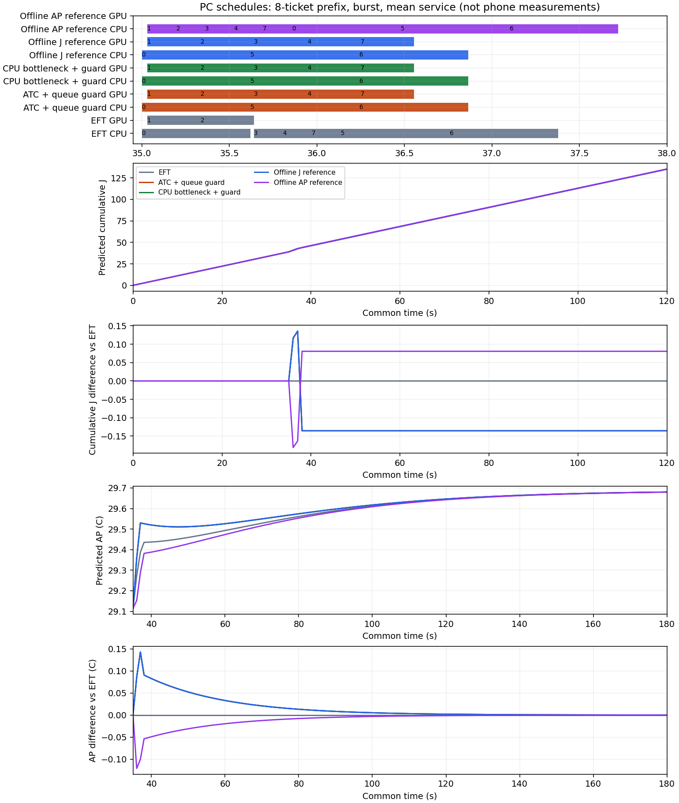

저장된 세 입력의 첫8요청 × 처리시간3문맥. 온라인27계산 + offline 일정18재생. 새 실측 없음.
모든 경우8/8 기한 충족. burst에서 ATC/병목은 EFT 대비 약−0.135J(−0.10%)지만 긴급P95 약+417ms. queue의 병목은 약−0.043J/일반평균−110ms. low는 동일합니다.
AP 최고값은 모두180초 끝에서 나오며 유효 유휴 기준보다 낮아 양의 열부담은0입니다. 따라서 이 작은 입력의 AP 최고값 차이를 열 절감 효과로 쓰지 않습니다. burst의 경로 차이는 최대 약0.143°C입니다.
| 입력 | 방식 | 기한 | J 0–120 | ΔJ vs EFT | Δ최고AP | 긴급P95 ms | 일반평균 ms |
|---|---|---|---|---|---|---|---|
| low prefix | EFT_REFERENCE | 8/8 | 135.378114 | +0.000000 | +0.000000 | 156.180 | 619.471 |
| low prefix | ATC_QUEUED_GUARD_V1 | 8/8 | 135.378114 | +0.000000 | +0.000000 | 156.180 | 619.471 |
| low prefix | CPU_BOTTLENECK_GUARD_V1 | 8/8 | 135.378114 | +0.000000 | +0.000000 | 156.180 | 619.471 |
| low prefix | OFFLINE_ENERGY_REFERENCE | 8/8 | 135.378114 | +0.000000 | +0.000000 | 156.180 | 619.471 |
| low prefix | OFFLINE_THERMAL_REFERENCE | 8/8 | 135.378114 | +0.000000 | +0.000000 | 156.180 | 619.471 |
| queue prefix | EFT_REFERENCE | 8/8 | 135.297368 | +0.000000 | +0.000000 | 705.124 | 1017.511 |
| queue prefix | ATC_QUEUED_GUARD_V1 | 8/8 | 135.297368 | +0.000000 | +0.000000 | 705.124 | 1017.511 |
| queue prefix | CPU_BOTTLENECK_GUARD_V1 | 8/8 | 135.254122 | -0.043247 | +0.000046 | 705.124 | 907.367 |
| queue prefix | OFFLINE_ENERGY_REFERENCE | 8/8 | 135.254122 | -0.043247 | +0.000046 | 705.124 | 907.367 |
| queue prefix | OFFLINE_THERMAL_REFERENCE | 8/8 | 135.378114 | +0.080746 | -0.000084 | 425.897 | 1193.183 |
| burst prefix | EFT_REFERENCE | 8/8 | 135.297368 | +0.000000 | +0.000000 | 915.563 | 1473.089 |
| burst prefix | ATC_QUEUED_GUARD_V1 | 8/8 | 135.161880 | -0.135488 | +0.000133 | 1332.664 | 1129.798 |
| burst prefix | CPU_BOTTLENECK_GUARD_V1 | 8/8 | 135.161880 | -0.135488 | +0.000133 | 1332.664 | 1129.798 |
| burst prefix | OFFLINE_ENERGY_REFERENCE | 8/8 | 135.161880 | -0.135488 | +0.000133 | 1332.664 | 1129.798 |
| burst prefix | OFFLINE_THERMAL_REFERENCE | 8/8 | 135.378114 | +0.080746 | -0.000079 | 636.336 | 1987.246 |

CPU/GPU 점유는 dispatch→lane_available. AP는35–180초, J는0–120초. 관측 곡선이 아닙니다.
모든 문맥의 상대차 · 요청별 변화 · 상태 점유/에너지 · 계산 곡선 · 기존 에너지 완화 하한 대조 · 탐색 범위/절단 · 근거·한계·재현
Strict 지원·experiment_ready=false·동결 계수 유지. 온라인 B2·폰 절감·열 피드백 정책의 우월성을 검증한 결과가 아닙니다.